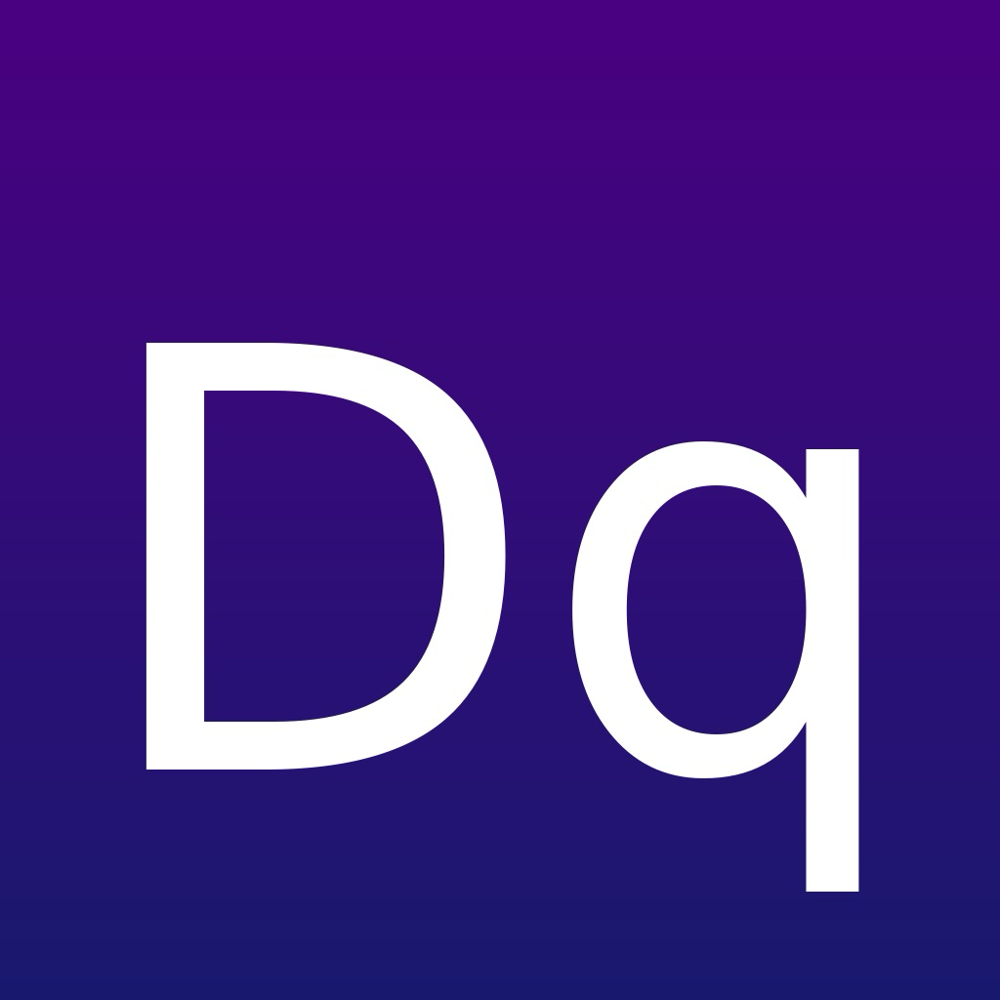

Grid Trivia, Strategy, and Daily Challenges
DoubleQross is a grid trivia game. You navigate from one corner of a colored board to the opposite corner by answering trivia questions correctly. Every cell holds a question from a topic; wrong answers burn the cell and cost a life. Pick your route, manage your lives, and reach the goal.
Choose a board from 4×4 to 8×8, three visibility modes (Face Up, Face Down, Blind), and Single or Double Cross gameplay. 158 topics across 37 themed packs cover everything from movies to math to mythology.
One puzzle per day, the same board for every player worldwide. Build a play streak by showing up daily and a win streak by closing them out. The home screen tracks both.
Finish a board, share its 6-character code, and a friend gets the exact same questions in the exact same layout. After they finish, a side-by-side comparison shows both paths.
On devices with Apple Intelligence, DoubleQross uses Apple's on-device Foundation Models for move suggestions with risk ratings, AI-generated hints, post-game analysis, and explanations. Nothing leaves your device. On devices without Apple Intelligence, the app falls back to deterministic suggestions automatically.
No login. No advertising. No third-party analytics. The app talks to a single trivia server we operate, using only an anonymous device-generated identifier. See the privacy policy for details.